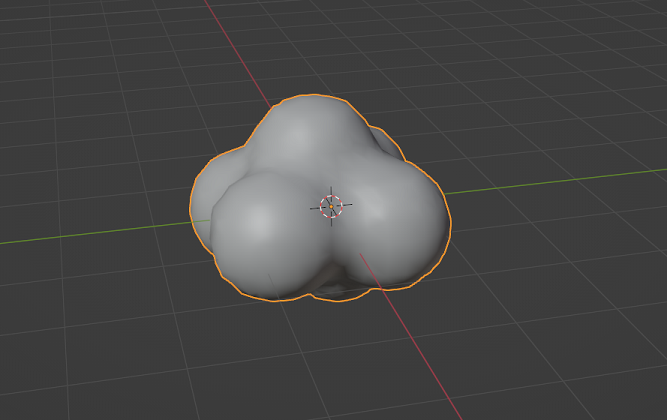
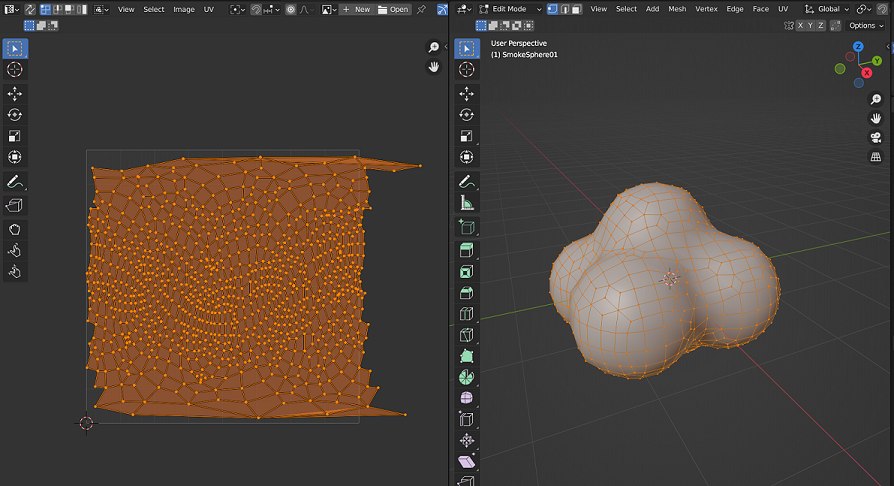

Blender - How to Create a Smoke Cloud
This is a simple guide on creating a smoke cloud mesh in blender which I picked up from a course

Modeling
In Modeling Window, create the smoke cloud with the following steps:
- use Shift A –> create a Ico sphere –> set the subdivisions to 1
- Add a subdivision modifier to the Ico sphere to make it rounder
- Shift + D to duplicate the ico sphere to create a cloud shape by moving the shapes around with G
- Once you have the shape you want, select all the ico spheres, and Ctrl + J to join the mesh together
- rename the object to SmokeSphere
- Note: if you want to edit, go to Edit Mode, and with vertex select mode, click on a vertex and press L and then G to move the object, to adjust the shape to your liking
- Add a remesh modifier to smooth the shape
- Use Voxel
- Voxel Size = 0.2
- Adaptivity = 0
- Apply the modifiers in order –> subdivision –> remesh so that we can edit the UVs
- In Object mode, select the object and Ctrl + A to apply all the transform
UV Map
In UV Editing Window, create the uv map with the following steps:
- Go to Edit Mode, Vertex Select Mode and Select All
- With the sphere selected, press U to bring up UV menu, and select Sphere Projection to automatically unwrap. You should get the shape below 
- It’s abit too big, so select the UV with a, scale it in X axis (s –> x) and fit it in the box. For those extruding points, select them by pressing b, box select, and use g to move them till it fits into the image
- This is a quick way to edit the UV, but still looks good
Export & Import
Lastly, export the FBX with the following settings:
- Under Include, check selected objects
- File name SmokeSphere.fbx
When Importing to Unity
- Under model, set the scale factor to 100 and apply